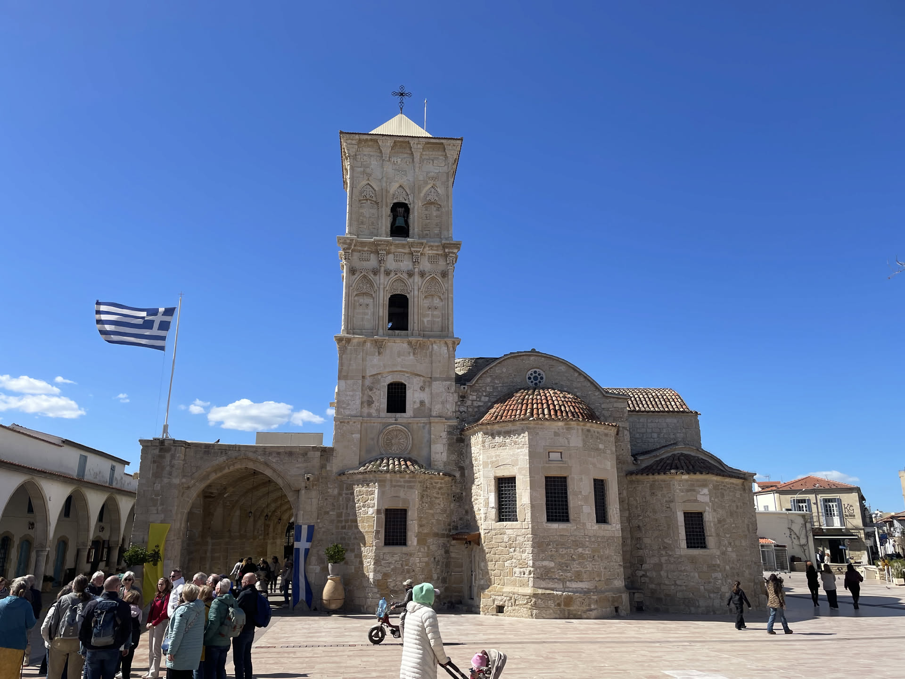
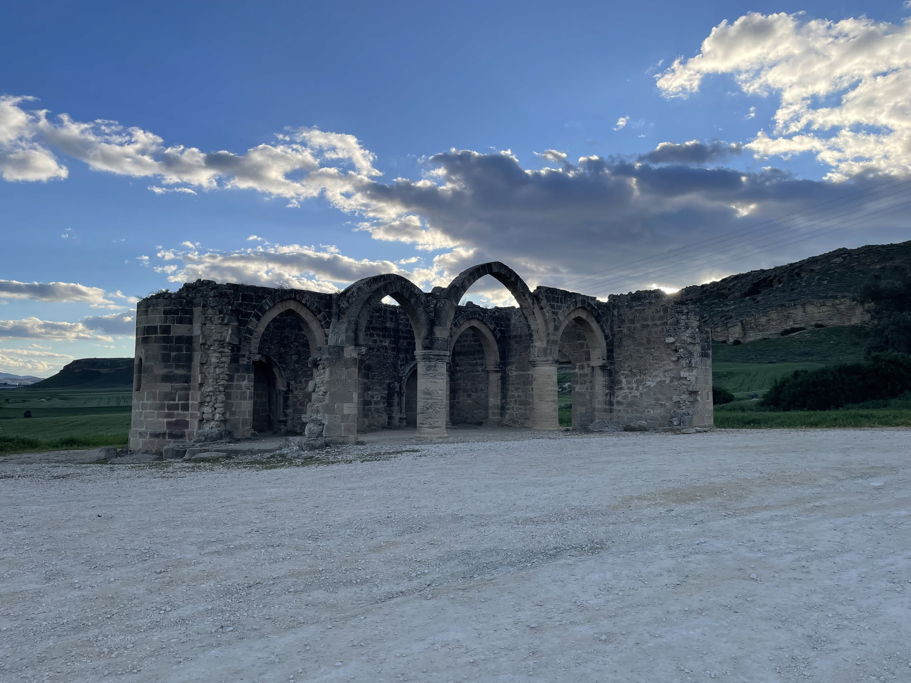
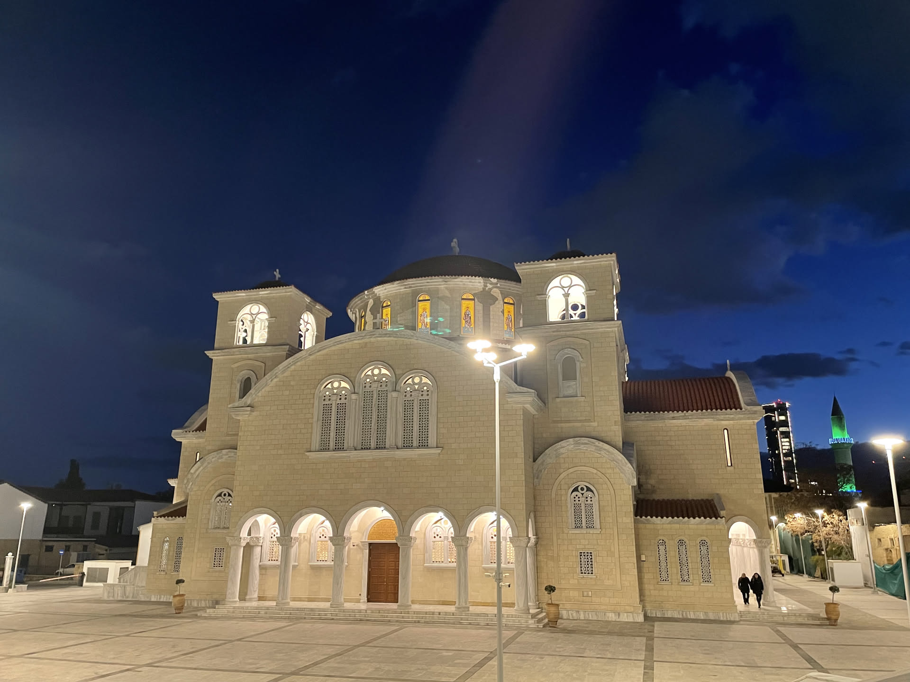
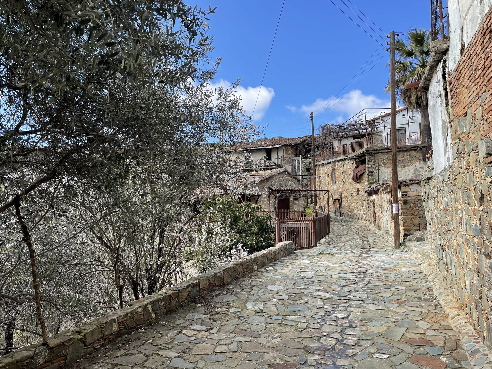
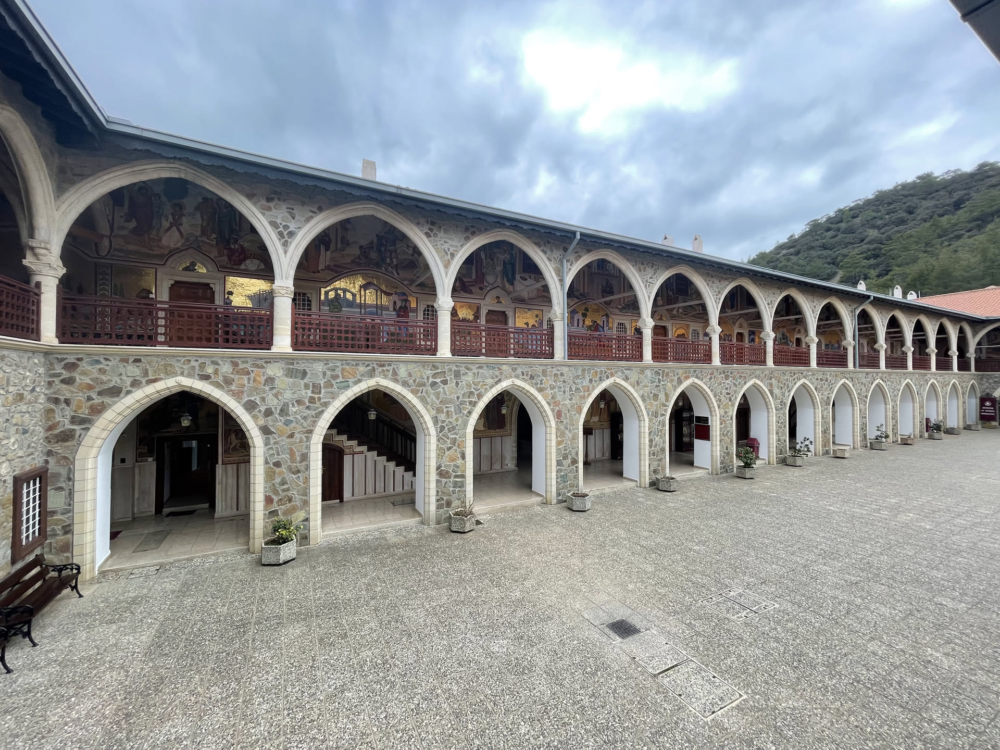
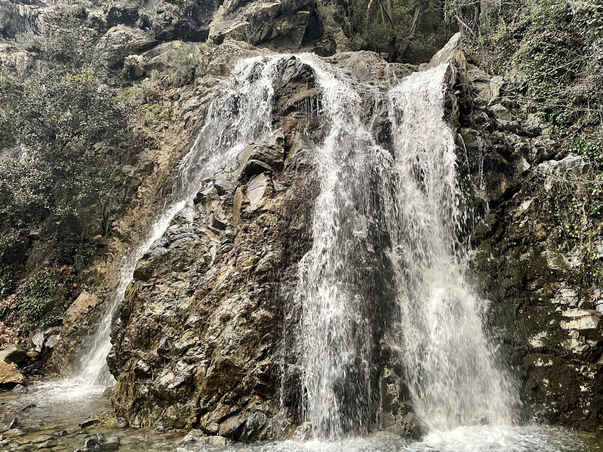
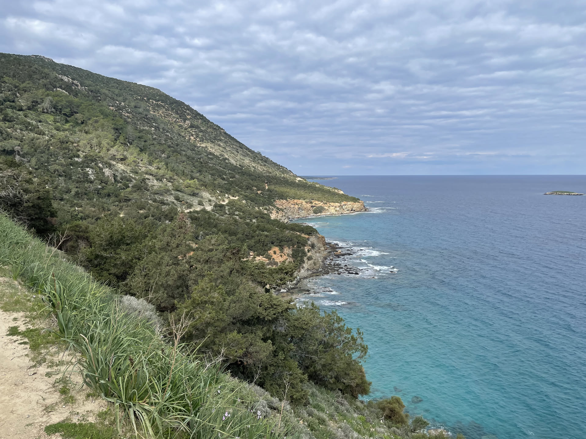
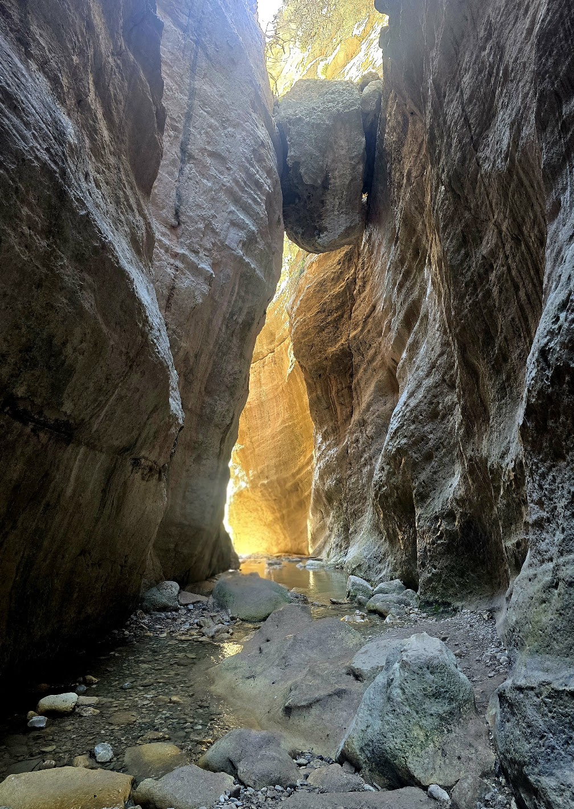

Zwiedzone miejsca
- Larnaka Salt Lake
- Hala Sultan Tekke
- Larnaka
- St Mamas Ruins
- Nikozja
- Fikardu
- Kościół Saint Nicholas of the Roof
- Klasztor Saint John Lampadistes
- Klasztor Kykkos
- Wodospad Chantara
- Wodospad Kalidonia
- Obserwatorium Troodos
- skała Afrodyty
- szlak Afrodyty w Akamas
- wąwóz Avkas
- Pafos
Czas wycieczki: 3 dni
Skład osobowy: 2 dorosłych
Lecąc na Cypr zdecydowaliśmy się wynająć samochód, bo miejsca, które chcieliśmy zobaczyć były rozsiane po całej południowej części wyspy. Sporo wypożyczalni nie pozwala na wjazd do Tureckiej części, ale doszliśmy do wniosku, że mamy na tyle mało czasu, że wolimy skupić się na południu. Trzeba pamiętać, że na Cyprze obowiązuje ruch lewostronny. Zastanawialiśmy się, czy styl jazdy lokalsów będzie taki jak w Grecji czy na południu Włoch, ale spotkała nas bardzo miła niespodzianka. Drogi były szerokie, kierowcy jeżdżą tutaj bardzo dobrze. Lecieliśmy i wracaliśmy z Larnaki i jak się okazało mieliśmy sporo szczęścia, bo w ostatni dzień naszego pobytu nad znajdującą się na Brytyjskiej części wyspy bazę wojskową nadleciały drony a kolejnego dnia to samo wydarzyło się później w okolicy lotniska Pafos i zostało ono zamknięte.
Zwiedzanie
Dzień pierwszy
Po wylądowaniu w Larnace odebraliśmy samochód i od razu ruszyliśmy na zwiedzanie. Pierwszym przystankiem było Larnaka Salt Lake, gdzie liczyliśmy na spotkanie z flamingami. Udało nam się je wypatrzyć jeszcze z okna samolotu podczas lądowania, ale kiedy dotarliśmy nad jezioro, całe stado zdążyło przenieść się na drugi brzeg. Spacer wokół jeziora i dotarliśmy do meczetu Hala Sultan Tekke. Kolejne kilka godzin spędziliśmy w samej Larnace. Przeszliśmy się promenadą, zajrzeliśmy do starego miasta. Po południu ruszyliśmy w stronę St Mamas Ruins. To niewielkie stanowisko archeologiczne, które nie zajmuje dużo czasu, ale dobrze sprawdza się jako krótki przystanek w trasie. Wieczorem dotarliśmy do Nikozji. Początkowo planowaliśmy zajrzeć również na turecką część miasta, jednak okazało się, że paszporty zostawiliśmy w samochodzie. Nie mieliśmy już ochoty wracać po nie, więc tym razem ograniczyliśmy się do zwiedzania greckiej części stolicy. Na nocleg dojechaliśmy już późnym wieczorem do niewielkiej miejscowości Lazania, położonej niedaleko Fikardu. Na miejscu czekał na nas właściciel z filiżanką aromatycznej lawendowej herbaty - Costas własnoręcznie odrestaurował stary dom, który dziś pełni jednocześnie funkcję niewielkiego muzeum.



Zwiedzanie
Dzień drugi
Drugi dzień rozpoczęliśmy od śniadania z właścicielem naszego noclegu. Costas przygotował dla nas lokalne przysmaki i kawę, a później oprowadził po muzeum. Całości dopełniały kwitnące dookoła drzewa migdałowe - zapach był przepiękny. Po śniadaniu pojechaliśmy do Fikardu. Kamienne domy, wąskie uliczki i cisza sprawiają, że można odnieść wrażenie, jakby czas zatrzymał się tu kilkadziesiąt lat temu. Kolejnym przystankiem był wpisany na listę UNESCO Kościół Saint Nicholas of the Roof**. Z zewnątrz wygląda dość niepozornie, jednak jego wnętrze skrywa jedne z najlepiej zachowanych bizantyjskich fresków na Cyprze. Przy okazji przeszliśmy się również po pobliskiej Galacie, znanej z tradycyjnych domów i malowniczych uliczek. Następnie odwiedziliśmy Klasztor Saint John Lampadistes, który również znajduje się na liście UNESCO. Po południu dotarliśmy do najbardziej znanego klasztoru na wyspie – Kykkos. To jedno z najważniejszych miejsc pielgrzymkowych na Cyprze. W środku zobaczyliśmy bogato zdobione wnętrza i mozaiki. Drugą część dnia spędziliśmy już na łonie natury. Najpierw wybraliśmy się na krótki trekking do wodospadu Chantara. Następnie ruszyliśmy do wodospadu Kalidonia. Na sam koniec czekała nas jeszcze jedna atrakcja. Po zmroku pojechaliśmy do Obserwatorium Troodos, gdzie mieliśmy obserwowaliśmy przez teleskop Jowisza.



Zwiedzanie
Dzień trzeci
Ostatni dzień naszej podróży rozpoczęliśmy od krótkiego postoju przy Skale Afrodyty. To jedno z najbardziej rozpoznawalnych miejsc na Cyprze. Następnie pojechaliśmy na półwysep Akamas, gdzie trochę już tematycznie, wybraliśmy się na Szlak Afrodyty. Trasa nie jest szczególnie wymagająca, za to przez większość czasu towarzyszą jej świetne widoki na wybrzeże i Morze Śródziemne. Droga z Akamas do wąwozu Avakas okazała się atrakcją samą w sobie. Jej stan pozostawiał wiele do życzenia i nie raz żałowaliśmy, że nie wypożyczyliśmy samochodu z napędem 4x4. Na szczęście udało się bezpiecznie dojechać na miejsce, choć momentami bardziej skupialiśmy się na omijaniu dziur niż na podziwianiu widoków. Sam wąwóz Avakas zrobił na nas niesamowite wrażenie. Wysokie wapienne ściany, wąskie przejścia i spacer po kamieniach oraz w strumieniu sprawiają, że jest to jedno z najbardziej charakterystycznych miejsc na zachodzie wyspy. Warto tylko pamiętać o wygodnym obuwiu, bo miejscami szlak bywa śliski. Na zakończenie wyjazdu odwiedziliśmy jeszcze Pafos. Po spacerze po mieście trafiliśmy do niewielkiej restauracji, w której zamówiliśmy tradycyjne meze oraz lokalne wino. Wszystko było tak pyszne, że ciężko nam było zdecydować, czy mamy jakiegoś faworyta. To było idealnie podsumowanie naszego wyjazdu.


